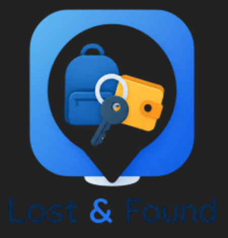

Website Lost & Found
Website ini dibuat untuk menampung barang kehilangan di kampus, mulai dari mahasiswa hingga dosen.

Website ini dibuat untuk menampung barang kehilangan di kampus, mulai dari mahasiswa hingga dosen.

Buka menu Laporkan Barang, lalu pilih Laporan Kehilangan. Isi nama, kategori, deskripsi barang, tempat dan tanggal terakhir dilihat, serta nomor telepon yang bisa dihubungi. Unggah minimal 3 gambar barangmu (atau foto yang mirip), lalu klik KIRIM.
Buka menu Laporkan Barang, lalu pilih Laporan Menemukan. Isi data barang, tempat dan tanggal ditemukan, serta nomor teleponmu, kemudian unggah minimal 3 gambar barang tersebut dan klik KIRIM. Simpan barangnya dengan aman sampai pemiliknya menghubungimu.
Cari barangmu di halaman Beranda, lalu hubungi penemunya lewat nomor telepon yang tercantum pada laporan. Atur waktu dan tempat pertemuan di area kampus yang ramai, dan bawa kartu identitas (KTM atau KTP) saat mengambil barang.
Sebutkan ciri khusus barang yang tidak terlihat di foto, misalnya isi dompet, goresan, stiker, wallpaper, atau nomor seri. Kamu juga bisa menunjukkan bukti pendukung seperti foto lama barang tersebut, struk pembelian, atau kotak kemasannya. Penemu berhak menolak menyerahkan barang jika bukti belum meyakinkan.